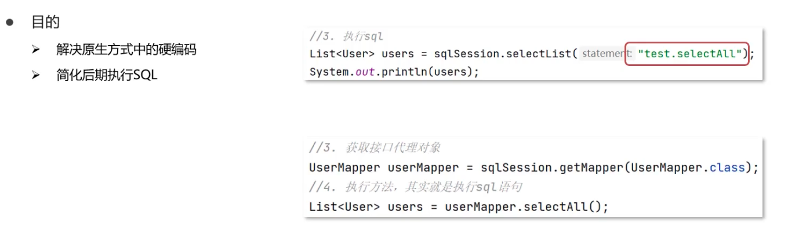
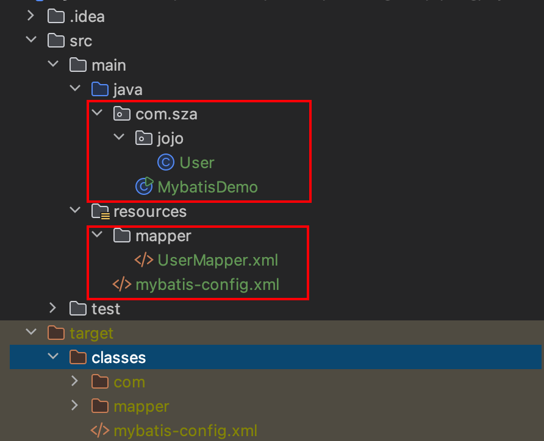
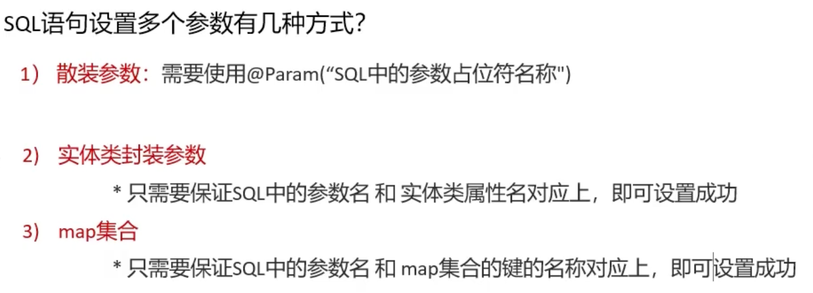

学习 http://www.mybatis.cn/
MyBatis MyBatis是一款优秀的持久型（JavaEE三层架构：表现层、业务层和持久层/数据访问层）框架，它支持自定义SQL、存储过程以及高级映射。MyBatis免除了几乎所有的JDBC代码以及设置参数和获取结果集的工作。MyBatis可以通过简单的XML或注解来配置和映射原始类型、接口和Java POJO（Plain Old Java Objects，普通老式Java对象）为数据库中的记录。
MyBatis快速入门 创建user表，添加数据 1 2 3 4 5 6 7 8 9 10 11 12 13 14 create database mybatisDb; use mybatisDb; drop table if exists tb_user;create table tb_user( id int primary key auto_increment, username varchar (20 ), password varchar (20 ), gender char (1 ), addr varchar (30 ) ); INSERT INTO tb_user VALUES (1 ,'zhangsan' ,'123' ,'男' ,'北京' ); INSERT INTO tb_user VALUES (2 ,'李四' ,'234' ,'女' ,'天津' ); INSERT INTO tb_user VALUES (3 ,'王五' ,'11' ,'男' ,'西安' );
创建模块，导入坐标 通过maven创建java项目，pom.xml导入依赖：
1 2 3 4 5 6 7 8 9 10 11 12 13 <dependencies > <dependency > <groupId > org.mybatis</groupId > <artifactId > mybatis</artifactId > <version > 3.5.9</version > </dependency > <dependency > <groupId > mysql</groupId > <artifactId > mysql-connector-java</artifactId > <version > 8.0.28</version > </dependency > </dependencies >
编写MyBatis核心配置文件，–> 替换连接信息，解决硬编码问题 1 2 3 4 5 6 7 8 9 10 11 12 13 14 15 16 17 18 19 20 21 22 23 24 25 26 27 28 29 30 31 32 33 34 35 36 37 38 <?xml version="1.0" encoding="UTF-8" ?> <!DOCTYPE configuration PUBLIC "-//mybatis.org//DTD Config 3.0//EN" "http://mybatis.org/dtd/mybatis-3-config.dtd" > <configuration > <environments default ="development" > <environment id ="development" > <transactionManager type ="JDBC" /> <dataSource type ="POOLED" > <property name ="driver" value ="com.mysql.cj.jdbc.Driver" /> <property name ="url" value ="jdbc:mysql://localhost:3306/mybatisDB?useSSL=false& allowPublicKeyRetrieval=true& serverTimezone=UTC" /> <property name ="username" value ="root" /> <property name ="password" value ="xxxx" /> </dataSource > </environment > </environments > <mappers > <mapper resource ="mapper/UserMapper.xml" /> </mappers > </configuration >
创建 Mapper XML 文件 sql语句将通过namespace.sqlId获得sql语句。
1 2 3 4 5 6 7 8 9 10 11 12 <!DOCTYPE mapper PUBLIC "-//mybatis.org//DTD mapper 3.0//EN" "http://mybatis.org/dtd/mybatis-3-mapper.dtd" > <mapper namespace ="com.sza.mapper.UserMapper" > <select id ="selectAll" resultType ="com.sza.pojo.User" > SELECT * FROM tb_user; </select > </mapper >
Mapper XML文件，通常存放在项目的classpath下的一个目录中，例如resources/mapper/UserMapper.xml。在上述示例中，我们定义了一个名为selectAll的查询操作，并将结果映射到com.sza.pojo.User类型（封装数据表的数据）的对象中。
配置 MyBatis 要使用Mapper XML文件，需要在MyBatis的配置文件中引入它们。MyBatis的配置文件通常是mybatis-config.xml，您需要在其中配置Mapper XML文件的路径。
1 2 3 4 5 6 <configuration > <mappers > <mapper resource ="mapper/UserMapper.xml" /> </mappers > </configuration >
在上述配置中，我们使用<mappers>元素引入了Mapper XML文件，使用<mapper>元素的resource属性指定了XML文件的路径。
编码 定义POJO类 1 2 3 4 5 6 7 8 9 10 11 12 13 14 15 16 17 18 19 20 21 22 23 24 25 26 27 28 29 30 31 32 33 34 35 36 37 38 39 40 41 42 43 44 45 46 47 48 49 50 51 52 53 54 55 56 57 58 59 60 61 package com.sza.pojo;public class User { private Integer id; private String username; private String password; private String gender; private String address; public Integer getId () { return id; } public void setId (Integer id) { this .id = id; } public String getUsername () { return username; } public void setUsername (String username) { this .username = username; } public String getPassword () { return password; } public void setPassword (String password) { this .password = password; } public String getGender () { return gender; } public void setGender (String gender) { this .gender = gender; } public String getAddress () { return address; } public void setAddress (String address) { this .address = address; } @Override public String toString () { return "User{" + "id=" + id + ", username='" + username + '\'' + ", password='" + password + '\'' + ", gender='" + gender + '\'' + ", address='" + address + '\'' + '}' ; } }
加载核心配置文件，获取sqlSessionFactory对象，执行sql语句 1 2 3 4 5 6 7 8 9 10 11 12 13 14 15 16 17 18 19 20 21 22 23 24 25 26 27 28 29 30 31 32 33 package com.sza;import com.sza.pojo.User;import org.apache.ibatis.io.Resources;import org.apache.ibatis.session.SqlSession;import org.apache.ibatis.session.SqlSessionFactory;import org.apache.ibatis.session.SqlSessionFactoryBuilder;import java.io.IOException;import java.io.InputStream;import java.util.List;public class MybatisDemo { public static void main (String[] args) throws IOException { String resource = "mybatis-config.xml" ; InputStream inputStream = Resources.getResourceAsStream(resource); SqlSessionFactory sqlSessionFactory = new SqlSessionFactoryBuilder ().build(inputStream); SqlSession sqlSession = sqlSessionFactory.openSession(); List<User> users = sqlSession.selectList("com.sza.mapper.UserMapper.selectAll" ); System.out.println(users); sqlSession.close(); } }
sqlSession：
sqlSession 是 MyBatis 提供的一个会话对象，负责与数据库交互。通过它可以执行 SQL 查询、插入、更新和删除操作。
selectList 方法 ：
这是 MyBatis 的核心方法之一，用于执行 SELECT 查询，并将查询结果封装为一个 List。
“com.sza.mapper.UserMapper.selectAll”：
这是 MyBatis 中映射的 SQL 语句的唯一标识符，通常由 命名空间 和 方法名 组成。
com.sza.mapper.UserMapper：Mapper 文件的命名空间。
selectAll：Mapper 文件中对应的方法名称。
List：表示查询结果是一个 User 对象的列表。MyBatis 会根据查询结果中的每一行记录创建一个 User 对象。
解决SQL映射文件的警告提示 产生原因：idea没和数据库建立连接，不识别表信息
解决方式：在idea中配置MySQL数据库连接
Mapper映射器
参考 http://www.mybatis.cn/717.html
建议：此知识需要 注解、反射、动态代理
注解 https://sza0415.github.io/%E6%B3%A8%E8%A7%A3/
动态代理 https://sza0415.github.io/%E5%8A%A8%E6%80%81%E4%BB%A3%E7%90%86/
什么是MyBatis映射器？ MyBatis框架包括两种类型的XML文件，一类是配置文件，即mybatis-config.xml，另外一类是映射文件，例如XXXMapper.xml等。在 MyBatis的配置文件mybatis-config.xml 包含了
1、MyBatis映射器发展历史简介 映射器是MyBatis中最核心的组件之一，在MyBatis 3之前，只支持XML映射器，所有的SQL语句都必须在XML文件中配置 。而从MyBatis 3开始，开始支持接口映射器，其底层利用的是接口绑定技术。另外，接口映射器允许通过注解定义SQL语句，用以替代XML文件配置SQL。
2、MyBatis映射器分类 MyBatis映射器分为三类，如下所示： （1）纯xml映射器，利用SqlSession的各种方法实现增删改查。例如：
1 Person p = session.selectOne("cn.mybatis.mydemo.mapper.PersonMapper.selectPersonById" , 1 );
（2）xml映射器+接口映射器的混合类型
先定义接口映射器，然后再定义xml映射器，其中xml映射器的namespace应该对应接口映射器的类名。其用法如下：
1 2 3 PersonMapper pm = session.getMapper(PersonMapper.class);Person p2 = pm.selectPersonById(1 );
（3）注解+接口映射器的混合形式
此类形式，将原先xml里面的sql配置信息，变成Java注解的形式写到接口映射器，用法与上面的例子雷同。
3、引入映射器的三种方式 3.1、通过文件类路径引入XML映射器 1 2 3 <mappers > <mapper resource ="cn/mybatis/mydemo/mapper/StudentMapper.xml" /> </mappers >
3.2、通过包名引入映射器接口 1 2 3 <mappers > <package name ="cn.mybatis.mydemo.mapper" /> </mappers >
3.3、用类注册引入映射器接口 1 2 3 <mappers > <mapper class ="cn.mybatis.mydemo.mapper.StudentMapper" /> </mappers >
4.XML映射器+接口映射器 用XML定义映射器分为两个部分：接口定义和XML配置。先定义一个映射器接口，如下所示。
1 2 3 public interface StudentMapper { public Student getStudent (Long id) ; }
注意：映射器只是一个接口，而不是一个实现类。初学者可能会产生一个很大的疑问：接口不是不能运行吗？的确，接口不能直接运行，但是MyBatis内部运用了动态代理技术，生成接口的实现类，从而完成接口的相关功能。只要明白 MyBatis 会为这个接口生成一个代理对象，代理对象会去处理映射器接口相关的逻辑即可。
具体地说，MyBatis 会根据你提供的 XML 文件或者注解配置，利用 动态代理技术 在运行时生成接口的代理实现。以下是详细解析：
MyBatis 使用 JDK 的动态代理机制（java.lang.reflect.Proxy）为映射器接口生成实现类。
有了这两个文件，就完成了一个映射器的定义。关于XML文件内容介绍，如下所示：
（1） 元素中的属性 namespace 所对应的是一个接口的全限定名，于是 MyBatis 上下文就可以通过它找到对应的接口。
（2） 元素表明这是一条查询语句，而属性 id 标识了这条 SQL，属性 parameterType=”long” 说明传递给 SQL 的是一个 long 型的参数，而 resultType=”student” 表示返回的是一个 Student 类型的返回值。而 student是配置文件 mybatis-config.xml 配置的别名，指代的是 com.mybatis.domain.Student。这条 SQL 中的 #{id} 表示传递进去的参数。
注意：我们并没有配置 SQL 执行后和 Student 的对应关系，它是如何映射的呢？其实，这里采用的是一种被称为自动映射的功能，MyBatis在默认情况下提供自动映射，只要SQL返回的列名能和POJO的属性对应起来即可。
最后，在MyBatis的配置文件里面引入这个XML映射器文件：
1 <mapper resource ="cn/mybatis/mydemo/mapper/StudentMapper.xml" />
4.1 接口绑定 接口绑定，就是在MyBatis中任意定义接口，然后把接口里面的方法和SQL语句绑定，我们直接调用接口方法就可以，这样比起原来了SqlSession提供的方法，可以有更加灵活的选择和设置。
接口绑定有两种实现方式，一种是通过注解绑定，就是在接口的方法上面加上 @Select、@Update等注解，里面包含Sql语句来绑定；另外一种就是通过xml里面写SQL来绑定，在这种情况下，要指定xml映射文件里面的namespace必须为接口的全路径名。
当Sql语句比较简单时候，用注解绑定，当SQL语句比较复杂时候，用xml绑定。一般情况下，用xml绑定的比较多。
使用MyBatis的mapper接口调用时要注意的事项有：
（1）Mapper接口方法名和mapper.xml中定义的每个sql的id相同；
（2）Mapper接口方法的输入参数类型和mapper.xml中定义的每个sql 的parameterType的类型相同；
（3）Mapper接口方法的输出参数类型和mapper.xml中定义的每个sql的resultType的类型相同；
（4）Mapper.xml文件中的namespace即是mapper接口的类路径。
5. 注解+接口映射器 除 XML方式定义映射器外，还可以采用注解方式定义映射器，它只需要一个接口就可以通过 MyBatis 的注解来注入 SQL，如下所示。
1 2 3 4 public interface StudentMapper2 { @Select("select id,name,address from student where id=#{id}") public Student getStudent (Long id) ; }
注解方式完全等同于XML方式创建映射器，但是使用注解的方式比XML方式要简单得多。如果注解方式和XML方式同时定义时，XML 方式将覆盖掉注解方式，一般情况下，MyBatis官方推荐使用的是XML方式，因为XML映射器能完成更复杂的SQL功能。
这个接口可以在 XML 中定义，如下所示：
1 2 3 <mappers > <mapper class ="cn.mybatis.mydemo.mapper.StudentMapper" /> </mappers >
demo:

定义与SQL映射文件同名的Mapper接口，并且将Mapper接口与SQL映射文件放置在同一目录下（目的其实是为了好扫描）
虽然在idea上配置文件和源代码是分离的，但编译过后resources和java两个是在一起的。
使用maven的compile编译一下：

因此：我们在java目录下和resources下创建相同的路径，最后编译就会在同一目录下：
设置SQL映射文件的namespace属性为Mapper接口全限定名
1 2 3 4 5 6 7 <mapper namespace ="com.sza.mapper.UserMapper" > <select id ="selectAll" resultType ="com.sza.pojo.User" > SELECT * FROM tb_user; </select > </mapper >
在Mapper接口中定义方法，方法名就是SQL映射文件中sql语句的id，并保持参数类型和返回值类型一致
1 2 3 public interface UserMapper { List<User> selectAll () ; }
编码：通过SqlSession的getMapper方法获取Mapper接口的代理对象，调用对应方法完成sql的执行
1 2 3 4 UserMapper userMapper = sqlSession.getMapper(UserMapper.class);List<User> users = userMapper.selectAll(); System.out.println(users);
此外。如果Mapper接口名称和SQL映射文件名称相同，并且在同一目录下，则可以使用包扫描的方式简化SQL映射文件的加载。
1 2 3 4 5 6 7 8 9 10 11 <mappers > <package name ="com.sza.mapper" /> </mappers >
Mybatis核心配置文件
详细可参考：http://www.mybatis.cn/680.html
MyBatis框架包括两种类型的XML文件，一类是配置文件，即mybatis-config.xml，另外一类是映射文件，例如XXXMapper.xml等。MyBatis的配置文件包含了会深深影响 MyBatis行为的设置和属性信息。配置文件的层次结构如下：
configuration（配置）
properties（属性）
settings（设置）
typeAliases（类型别名）
typeHandlers（类型处理器）
objectFactory（对象工厂）
plugins（插件）
environments（环境配置）
environment（环境变量）
transactionManager（事务管理器）
dataSource（数据源）
databaseIdProvider（数据库厂商标识）
mappers（映射器）
1 2 3 4 5 6 7 8 9 10 11 12 13 14 15 16 17 18 19 20 21 22 23 24 25 26 27 28 29 30 31 32 33 34 35 36 37 38 39 40 41 42 43 44 45 46 47 <?xml version="1.0" encoding="UTF-8" ?> <!DOCTYPE configuration PUBLIC "-//mybatis.org//DTD Config 3.0//EN" "http://mybatis.org/dtd/mybatis-3-config.dtd" > <configuration > <environments default ="development" > <environment id ="development" > <transactionManager type ="JDBC" /> <dataSource type ="POOLED" > <property name ="driver" value ="com.mysql.cj.jdbc.Driver" /> <property name ="url" value ="jdbc:mysql://localhost:3306/mybatisDb?useSSL=false& allowPublicKeyRetrieval=true& serverTimezone=UTC" /> <property name ="username" value ="root" /> <property name ="password" value ="xxxxx" /> </dataSource > </environment > </environments > <mappers > <package name ="com.sza.mapper" /> </mappers > </configuration >
typeAliases 1 2 3 <typeAliases > <package name ="com.blog.domain" /> </typeAliases >
：是 MyBatis 配置文件中的一个标签，用于定义类型别名。目的是减少重复写 Java 类的全限定名（如 com.blog.domain.User）。
：定义了一个包的路径，MyBatis 会自动扫描该包下的所有类，并为它们生成别名。
生成的默认别名规则
MyBatis 会使用类的简单名称（不包括包名）作为默认别名。例如，如果 com.blog.domain 包下有以下类：User 类、Article 类……
默认生成的别名是：user、article….
别名是大小写不敏感的，因此可以在 MyBatis 的 XML 配置中直接使用这些简化的别名，而不用写全限定名。
假设 com.blog.domain 包下有一个 User 类：
1 2 3 4 5 6 7 package com.blog.domain;public class User { private int id; private String name; }
Mapper XML 文件：
1 2 3 4 5 <mapper namespace ="com.blog.mapper.UserMapper" > <select id ="selectUser" resultType ="user" > SELECT * FROM users WHERE id = #{id} </select > </mapper >
这里的 resultType=”user” 使用了类型别名 user，对应的是 com.blog.domain.User 类。
此外，显式别名的配置方式：
1 2 3 4 <typeAliases > <typeAlias alias ="user" type ="com.blog.domain.User" /> <typeAlias alias ="article" type ="com.blog.domain.Article" /> </typeAliases >
如果完全使用注解方式开发，那么 就没有必要了 ，因为注解开发中根本不依赖 XML 文件，也不会用到 定义的别名。
Mybatis案例实操 数据准备 数据库表：
1 2 3 4 5 6 7 8 9 10 use mybatisDb; drop table if exists tb_brand; create table tb_brand( id int primary key auto_increment, brand_name varchar (20 ), company_name varchar (20 ), orderd int , description varchar (100 ), status int ); insert into tb_brand(brand_name, company_name, orderd, description, status) VALUES ('三只松鼠' ,'三只松鼠有限' ,5 ,'好好' ,0 ), ('asd' ,'asda' ,100 ,'sdasd' ,1 ); select * from tb_brand;
实体类：
1 2 3 4 5 6 7 8 9 10 11 12 13 14 15 16 17 18 19 20 21 22 23 24 25 26 27 28 29 30 31 32 33 34 35 36 37 38 39 40 41 42 43 44 45 46 47 48 49 50 51 52 53 54 55 56 57 58 59 60 61 62 63 64 65 66 67 68 69 70 71 package com.sza.pojo;public class Brand { private Integer id; private String BrandName; private String companyName; private Integer ordered; private String description; private Integer status; public Integer getId () { return id; } public void setId (Integer id) { this .id = id; } public String getBrandName () { return BrandName; } public void setBrandName (String brandName) { BrandName = brandName; } public String getCompanyName () { return companyName; } public void setCompanyName (String companyName) { this .companyName = companyName; } public Integer getOrdered () { return ordered; } public void setOrdered (Integer ordered) { this .ordered = ordered; } public String getDescription () { return description; } public void setDescription (String description) { this .description = description; } public Integer getStatus () { return status; } @Override public String toString () { return "Brand{" + "id=" + id + ", BrandName='" + BrandName + '\'' + ", companyName='" + companyName + '\'' + ", ordered=" + ordered + ", description='" + description + '\'' + ", status=" + status + '}' ; } public void setStatus (Integer status) { this .status = status; } }
安装插件MybatisX：配置文件和源文件会有对应
功能实现 查询：查询所有数据
1 2 3 4 5 6 7 8 9 package com.sza.mapper;import com.sza.pojo.Brand;import java.util.List;public interface BrandMapper { List<Brand> selectAll () ; }
参数：无
结果：List
编写sql语句：sql映射文件
1 2 3 4 5 6 7 8 9 10 11 <!DOCTYPE mapper PUBLIC "-//mybatis.org//DTD mapper 3.0//EN" "http://mybatis.org/dtd/mybatis-3-mapper.dtd" > <mapper namespace="com.sza.mapper.BrandMapper" > <select id="selectAll" resultType="com.sza.pojo.Brand" > select * from tb_brand; </select> </mapper>
1 2 3 4 5 6 7 8 9 10 11 12 13 14 15 16 17 18 19 20 public class MybatisTest { @Test public void testSelectAll () throws IOException { String resource = "mybatis-config.xml" ; InputStream inputStream = Resources.getResourceAsStream(resource); SqlSessionFactory sqlSessionFactory = new SqlSessionFactoryBuilder ().build(inputStream); SqlSession sqlSession = sqlSessionFactory.openSession(); BrandMapper mapper = sqlSession.getMapper(BrandMapper.class); List<Brand> brands = mapper.selectAll(); System.out.println(brands); sqlSession.close(); } }
我们发现BrandName和companyName的值都为null
查询：查询详情
1 2 3 4 5 public interface BrandMapper { List<Brand> selectAll () ; Brand selectById (int id) ; }
1 2 3 4 5 6 7 8 9 <!-- 参数占位符： 1. #{}: 会将这个地方替换为? 防止sql注入 2. ${}: 会拼接sql语句 会存在sql注入问题 --> <select id="selectById" resultMap="brandResultMap" > select * from tb_brand where id = #{id} </select>
1 2 3 4 5 6 7 8 9 10 11 12 13 14 15 16 17 18 19 @Test public void testSelectById () throws IOException { String resource = "mybatis-config.xml" ; InputStream inputStream = Resources.getResourceAsStream(resource); SqlSessionFactory sqlSessionFactory = new SqlSessionFactoryBuilder ().build(inputStream); SqlSession sqlSession = sqlSessionFactory.openSession(); BrandMapper mapper = sqlSession.getMapper(BrandMapper.class); int id = 1 ; Brand brand = mapper.selectById(id); System.out.println(brand); sqlSession.close(); }
查询：多条件查询 
1 2 List<Brand> selectByCondition (@Param("status") int status,@Param("companyName") String companyName,@Param("brandName") String brandName) ;
1 2 List<Brand> selectByCondition (Brand brand) ;
1 2 List<Brand> selectByCondition (Map map) ;
在 SQL 中，||是一个字符串连接运算符。它用于将两个或多个字符串连接在一起，形成一个新的字符串。例如，在查询语句select 'abc' || 'def';中，结果将是abcdef，即将'abc'和'def'这两个字符串连接起来。
在 MySQL 中，字符串连接运算符是CONCAT()函数，而不是||。例如，在 MySQL 中上述的字符串连接操作可以写成CONCAT(#{companyName}, '%')
1 2 3 4 5 6 7 8 <select id ="selectByCondition" resultMap ="brandResultMap" > select * from tb_brand where status= #{status} and company_name like concat('%',#{companyName},'%') and brand_name like concat('%',#{brandName},'%') </select >
散装参数，方法中有多个参数，需要使用@Param(“SQL参数占位符”)
1 2 List<Brand> selectByCondition (@Param("status") int status,@Param("companyName") String companyName,@Param("brandName") String brandName) ;
1 2 3 4 5 6 7 8 9 10 11 12 13 14 15 16 17 18 19 20 21 22 @Test public void testSelectByCondition () throws IOException { int status = 1 ; String conpanyName = "三只" ; String brandName = "松鼠" ; String resource = "mybatis-config.xml" ; InputStream inputStream = Resources.getResourceAsStream(resource); SqlSessionFactory sqlSessionFactory = new SqlSessionFactoryBuilder ().build(inputStream); SqlSession sqlSession = sqlSessionFactory.openSession(); BrandMapper mapper = sqlSession.getMapper(BrandMapper.class); List<Brand> brands = mapper.selectByCondition(status, conpanyName, brandName); System.out.println(brands); sqlSession.close(); }
对象参数：
1 2 List<Brand> selectByCondition (Brand brand) ;
1 2 3 4 5 6 7 8 9 10 11 12 13 14 15 16 17 18 19 20 21 22 23 24 25 26 27 28 @Test public void testSelectByCondition () throws IOException { int status = 1 ; String conpanyName = "三只" ; String brandName = "松鼠" ; Brand brand = new Brand (); brand.setBrandName(brandName); brand.setStatus(status); brand.setCompanyName(conpanyName); String resource = "mybatis-config.xml" ; InputStream inputStream = Resources.getResourceAsStream(resource); SqlSessionFactory sqlSessionFactory = new SqlSessionFactoryBuilder ().build(inputStream); SqlSession sqlSession = sqlSessionFactory.openSession(); BrandMapper mapper = sqlSession.getMapper(BrandMapper.class); List<Brand> brands = mapper.selectByCondition(brand); System.out.println(brands); sqlSession.close(); }
map集合参数：
1 2 List<Brand> selectByCondition (Map map) ;
1 2 3 4 5 6 7 8 9 10 11 12 13 14 15 16 17 18 19 20 21 22 23 24 25 26 27 28 29 30 31 32 33 34 @Test public void testSelectByCondition () throws IOException { int status = 1 ; String conpanyName = "三只" ; String brandName = "松鼠" ; Map map = new HashMap (); map.put("status" , status); map.put("companyName" , conpanyName); map.put("brandName" , brandName); String resource = "mybatis-config.xml" ; InputStream inputStream = Resources.getResourceAsStream(resource); SqlSessionFactory sqlSessionFactory = new SqlSessionFactoryBuilder ().build(inputStream); SqlSession sqlSession = sqlSessionFactory.openSession(); BrandMapper mapper = sqlSession.getMapper(BrandMapper.class); List<Brand> brands = mapper.selectByCondition(map); System.out.println(brands); sqlSession.close(); }
查询：动态条件查询 SQL语句会随着用户的输入或外部条件的变化而变化，我们称为动态SQL 。
动态SQL是MyBatis的强大特性之一：
if：使用动态 SQL 最常见情景是根据条件包含 where 子句的一部分
使用test进行逻辑判断，其中的变量是类中的属性，而不是数据库的字段。
1 2 3 4 5 6 7 <select id ="selectByCondition" resultMap ="brandResultMap" > select * from tb_brand where status= #{status} and company_name like concat('%',#{companyName},'%') and brand_name like concat('%',#{brandName},'%') </select >
例如在该where子句中，由三个条件组成，用户可能只勾选其中两个条件进行查询。我们可以使用if进行动态添加。
1 2 3 4 5 6 7 8 9 10 11 12 13 14 <select id ="selectByDynamicCondition" resultMap ="brandResultMap" > select * from tb_brand where <if test ="status != null" > status = #{status} </if > <if test ="companyName != null and companyName != '' " > -- 这里判断条件中的变量要是Brand类的属性，不要写成company_name and company_name like concat('%',#{companyName},'%') </if > <if test ="brandName != null and brandName != '' " > and brand_name like concat('%',#{brandName},'%') </if > </select >
1 2 List<Brand> selectByDynamicCondition (Brand brand) ;
假设我们给 status和companyName属性赋值
1 2 3 4 5 6 7 8 9 10 11 12 13 14 15 16 17 18 19 20 21 22 23 24 25 26 27 28 29 @Test public void testSelectByDynamicCondition () throws IOException { int status = 1 ; String companyName = "三只" ; String brandName = "松鼠" ; Brand brand = new Brand (); brand.setStatus(status); brand.setCompanyName(companyName); String resource = "mybatis-config.xml" ; InputStream inputStream = Resources.getResourceAsStream(resource); SqlSessionFactory sqlSessionFactory = new SqlSessionFactoryBuilder ().build(inputStream); SqlSession sqlSession = sqlSessionFactory.openSession(); BrandMapper mapper = sqlSession.getMapper(BrandMapper.class); List<Brand> brands = mapper.selectByDynamicCondition(brand); System.out.println(brands); sqlSession.close(); }
运行会发现生成的sql语句：
说明是有效的，选择了 status = #{status}和 and company_name like concat(‘%’,#{companyName},’%’)两个条件进行查询，但是现在出现一个问题：如果不选择status这个条件，那么where后接的会有and，如下：
1 2 3 4 Brand brand = new Brand (); brand.setCompanyName(companyName); brand.setBrandName(brandName);
运行报错：
解决办法：使用<where>标签替换where关键字，<whrer>只会在它包含的标签中有返回值的情况下才插入 “WHERE” 子句。 而且，若子句的开头为 “AND” 或 “OR”，where标签也会将它们去除。
1 2 3 4 5 6 7 8 9 10 11 12 13 14 15 <select id ="selectByDynamicCondition" resultMap ="brandResultMap" > select * from tb_brand <where > <if test ="status != null" > status = #{status} </if > <if test ="companyName != null and companyName != '' " > and company_name like concat('%',#{companyName},'%') </if > <if test ="brandName != null and brandName != '' " > and brand_name like concat('%',#{brandName},'%') </if > </where > </select >
我们发现and被去除了，此外我们如果不设置任何的值：
1 2 3 4 Brand brand = new Brand ();
运行，发现不会插入where子句：
choose (when, otherwise) 选择 ，类似于Java中的switch语句，从多个条件中选择一个
1 2 3 4 5 6 7 8 9 10 11 12 13 14 15 16 17 18 19 20 <select id ="selectByConditionSingle" resultMap ="brandResultMap" > select * from tb_brand <where > <choose > <when test ="status != null" > status = #{status} </when > <when test ="companyName != null and companyName != '' " > company_name like concat('%',#{companyName},'%') </when > <when test ="brandName != null and brandName != '' " > brand_name like concat('%',#{brandName},'%') </when > <otherwise > 1 = 1 </otherwise > </choose > </where > </select >
choose相当于switch，when类似于case，otherwise类似于default。
trim (where, set)
foreach
添加 1 2 3 4 <insert id ="addBrand" > INSERT into tb_brand (brand_name,company_name,ordered,description,status) VALUES (#{brandName},#{companyName},#{ordered},#{description},#{status}) </insert >
需要执行sql语句后提交事务：
1 2 3 4 5 BrandMapper mapper = sqlSession.getMapper(BrandMapper.class); mapper.addBrand(brand); sqlSession.commit();
Mybatis事务，可以在openSession默认开启事务：
1 SqlSession sqlSession = sqlSessionFactory.openSession(true );
主键返回 当我们添加东西，想要返回其主键id值：
1 2 3 4 mapper.addBrand(brand); sqlSession.commit(); System.out.println(brand.getId());
打印为null，及时数据库中添加了该数据
1 2 3 4 <insert id ="addBrand" useGeneratedKeys ="true" keyProperty ="id" > INSERT into tb_brand (brand_name,company_name,ordered,description,status) VALUES (#{brandName},#{companyName},#{ordered},#{description},#{status}) </insert >
添加useGeneratedKeys=”true” keyProperty=”id” id 为tb_brand的主键，添加该命令，返回添加数据的主键。再此添加，就会打印出添加的id。
修改